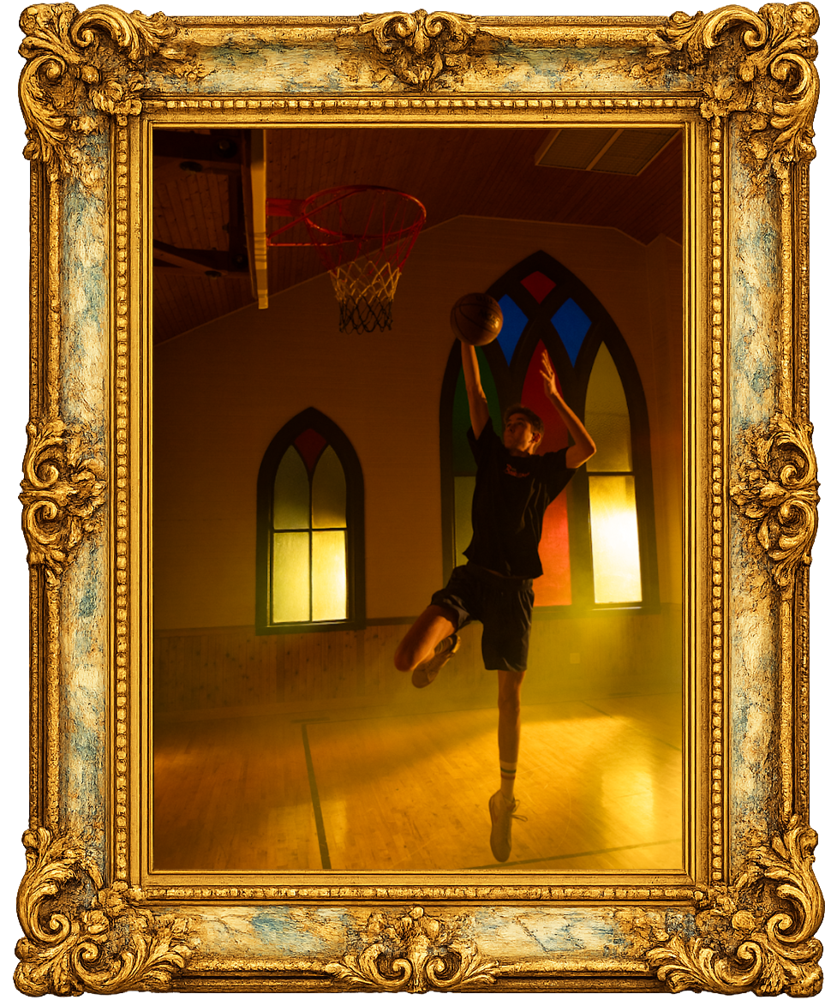
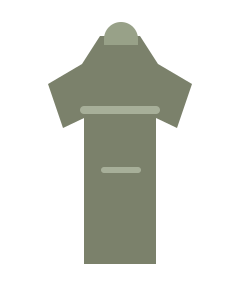

About the Artist
How I work through a problem
A museum-style map of the way I move from instinct to research to insight, with a few personal artifacts around the edges.
Artist's Process
The path bends, loops, and doubles back. Insight only counts when the research still holds after the return trip.
-
01
Find a problem
-
02
Gut reaction solution
-
03
Imagine execution
-
04
Work backwards toward possible insights
-
05
Conduct primary research
-
06
Explore themes and new angles
-
07
Support or disprove with secondary research
-
08
Identify insights
-
09
Work backwards again to confirm the research lines up
-
10
Use the insight to spark creative thought starters
I’m Bryce Peterson, a strategist and storyteller interested in the ideas that solve problems people face. I am the kind of person who believes work can always be improved. Sometimes that means crushing long hours and hitting project overhauls, but seeing the improved product always makes it worth it.
Philosophy
I believe that strategy is the unseen building block of all good ideas. The best creative ideas are built on strategy whether people realize it or not, and the process gets stronger when instinct and research are willing to challenge each other.
Vision
I want to make work that inspires. I want to create ads that solve problems while encouraging growth and improvement. I want to leave a positive impact on the world. I want to work hard and see that effort pay off. And an award or two wouldn’t hurt.
Beyond the Brief
Hobbies, side projects, and the other rooms I keep wandering into
A few quieter obsessions that keep feeding the work from the side.

Painting Studies
A reminder that mood, interpretation, and texture can carry just as much meaning as explanation.

Basketball
Competition keeps me honest about repetition, adjustment, and what improvement actually demands.

Thrift Finds
Proof that taste often comes from noticing what others skip past and giving it a second life.